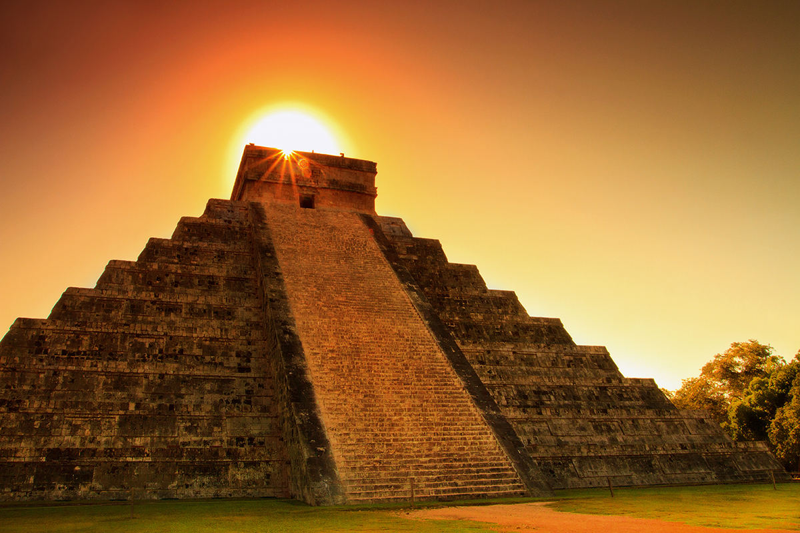
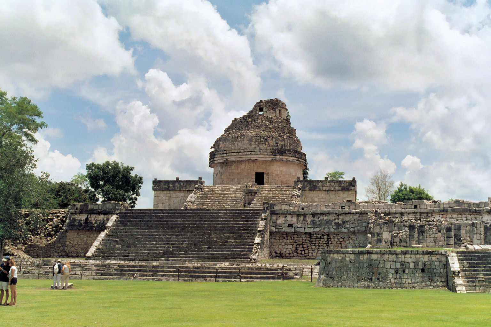
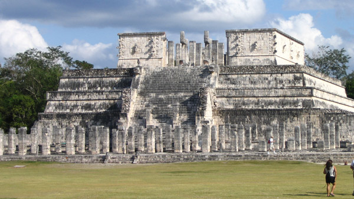

Kristaus Atpirkėjo statula
Čičen Ica
Čičen Ica (isp. Chichén Itzá, maj. Chi'ch'èen Ìitsha – „prie icų šulinio žiočių“) − Jukatane (Meksika) esantis majų šventyklų miestas, buvęs politinis, ekonominis ir religinis šios civilizacijos centras.
Šis pavadinimas buvo naudojamas dar prieš ispanų nukariavimą, taigi, yra originalus majų pavadinimas. Jis sudarytas iš trijų elementų – chi („žiotys“, „kraštas“), ch’e'en („šulinys“) ir itza („icai“, majų tauta). Šis pavadinimas buvo duotas dėl to, kad miesto gyventojai buvo icai, o jame buvo šventasis šulinys (senotas).


Manoma, kad klasikiniame laikotarpyje, prieš miestui suklestint, vietovė buvo vadinama kitaip: Uuc Yabnal.
2006 m. čia buvo nufilmuota Melo Gibsono veiksmo drama „Apokalipto“.
Majai, talentingi astronomai ir matematikai, sukūrė kalendorių, pagrįstą tiksliais dangaus kūnų stebėjimais, kurį taikė savo religinėms apeigoms.
Čičen Icoje esanti Lietaus dievo Kukulkano piramidė – tai milžiniškas kalendorius. Piramidę sudaro devyni lygiai, iškloti 52 plokštėmis − tiek metų yra majų toltekų cikle. Kiekvienos iš keturių pusės laiptai turi po 91 pakopą, pridėjus viršūnės laiptelį iš viso − 365 − tiek dienų yra metuose
